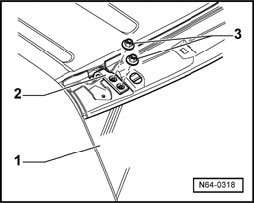

Hinged Tailgate Window, Adjusting
Hinged Tailgate Window, Adjusting
- Remove rear spoiler

- Loosen striker pin
- Loosen the nuts -3- on the hinge -2- at left and right (do not remove).
- Align the hinged tailgate window -1- corresponding to the exterior vehicle contours.
- After adjusting the hinged tailgate window, tighten the nuts -3-.
Tightening torque: Bolts -3- 8 Nm
- Adjust latch bracket